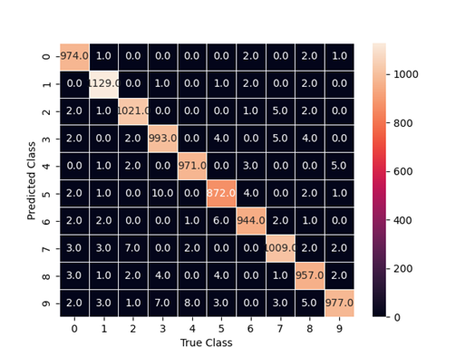

Classifying Digit Images: Using different types of regularizers
By Christopher Williams
Date: 21/Dec/2022
Welcome to this mini project! Today, I will be showcasing some basic neural networks, made from python with Tensorflow/Keras, that are being used by different types of regularizers in order to classify handwritten numbers.
Each neural network here is a basic type of neural network, called a sequential network, with three layers and each layer having 500 units. The output layer uses softmax as its activation function, a function that produces an output for each unit from its inputs, which outputs a probability over the classes. For the hidden layers, layers that are not the output or input, they use relu which is a nonlinear activation function that is very common to use for the hidden layers. It will be trained with 250 epochs, which is the number of times the data will be trained with and a batch size of 64, which is the number of points to run at a time. It uses RMSprop for the optimizer, a common gradient descent function to fine tune the model. Adam is another optimizer that is basically just a better version of RMSprop but RMSprop is being used here simply because it is different. The loss function is CategoricalCrossentropy, which uses the entropy metric across many classes to calculate how well it does between the network changing itself. Finally it uses CategoricalAccuracy for the metrics to measure the losses.
The final common aspect between the models to deal with is the data. The data is stored in numpy arrays already but what the data represents are images. Specifically, it is images of handwritten digits that were provided by MNIST, which is the standards department of the US to help with the post office. It is a flatten array that contains values that measure black to white for the pixels. The training data contains 60,000 records that are labeled from 0 to 9 for each of the digits. Our validation testing, testing done with data that was not trained on the model with, is being done as a holdout. This is data that is held back from the sample set so we know the real truth of the data and is typically 20% of the sample set.
Now let's go into the models themselves and discuss the different regularizers they are using. First, what is a regularizer? A regularizer is a function or method that helps moderate the changes that are occurring in the model so the model is not over fitted, which means that the model is too tailored to the supplied data set rather than the type of data generally.
Normal Model
The first model has no regularizers so it is just a normal sequential model. This is our control to judge our particular use of regularizers.
L2 Regularizer

Our first regularizer is the most direct of all of the regularizers being used here. After each epoch, the neural network will find the error between the predicted answer and the actual answer and modify its own weights to get closer to the actual answer. An issue happens when one of the weights is massively changed because this will overpower the other changes so this will help smooth it out. L2 reduces the large weight to something more manageable to the network.
The way this is done in Keras is to simply add it to each layer under the kernel_regularizer option
Dropout Regularizer

Our next two regularizers are more indirect in how they smooth out the network. This time we are affecting the number of units in the layer by simply turning off a percentage of them at random. This will overall reduce the complexity of the model which will in turn make the model more general.
This is done very simply in Keras by adding it as a layer between each dense layers and giving the percentage of units that will be turned off
Early Stop Regularizer

Early stopping does exactly as its name implies in that it simply just stops the training suddenly. This is done by monitoring some type of metric, in our case the loss, and seeing when we start having a drop off in improvement and then stop there. This is done because the model over time is going to be trained on the particulars of the data so if we just stop it early then the model will just have a general sense of the data.
This time in Keras, it is done in the fitting stage and is an option called callbacks where you can give which metric to monitor and the patience is simply how many epochs to run that do not see notable improvement.
Analysis
The way we will be analyzing the data is by using a confusion matrix. A confusion matrix looks at the predicted class for the data point and the actual label of the data point and tallies where it went. The diagonal is the correct answer and every other point on that column are predictions that are wrong so we also know what it is predicting instead of the correct answer.
Our first matrix is the normal model and you can see it actually did quite well overall with 98.72% accuracy for the validation testing and also it is uniform for the wrong answers that it predicts. This means it is quite well generalized as a model. It does have a worrying 100% accuracy for the training stage which normally means it is overfitted.
This next matrix is the L2 Regularizer and again it did great with 94.96% accuracy for validation testing but it does have some unusual errors such as constantly predicting 0, 5, and 7 but doing quite well with 2. Its training accuracy is 94.96 which is just further proof that it is not too dependent on the training data so it is well generalized.
Our dropout model did terribly with a validation testing accuracy of 9.85% and it constantly predicted 0 which means it is heavily biased, so it is under fitted, and thus is useless to use here. Its training accuracy is 98.77% which shows that training accuracy is not a good metric to go by and validation is always needed to make sure the model is okay.
Our final model is the early stop model that did well but it over predicts 0 for some reason. Its validation accuracy is 95.31%, which is great, but its training accuracy is 99.84% which is quite high. This is similar to the first model where the high training accuracy is not necessarily a sign that the model is not well generalized. Another interesting thing about this model is that it stopped at epoch 25 which means that it stopped training and did well with only 10% of the training time as the other models.
Here is the overall accuracy for each model
Lessons to Learn
A couple of lessons to learn from here. The first is that regularizers don't always work and it takes some exploring to figure out which one to use for the dataset you are using. In this case dropout did terribly but in other sample datasets it may be the best performing one. Another lesson is that validation is always important and that training accuracy during the training is a rule of thumb at best.